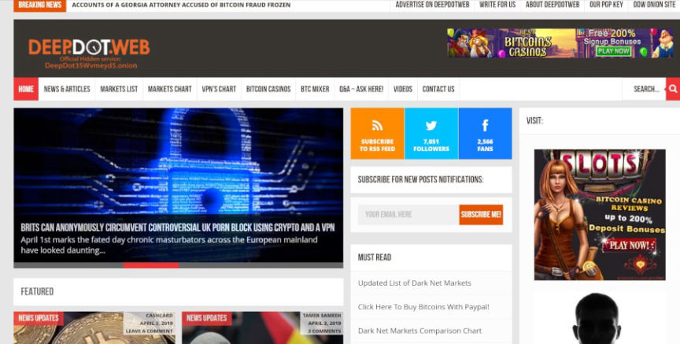
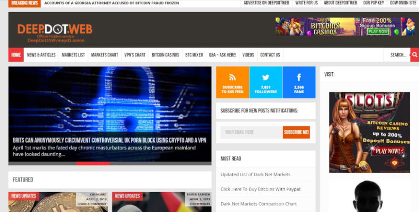

DeepDotWeb Admin Sentenced to 97 Months in Prison
A federal judge sentenced the administrator of DeepDotWeb.com to 97 months in prison.
United States District Court Judge Donetta W. Ambrose sentenced Tal Prihar, 37, to 97 months in federal prison for laundering almost $8.5 million in cryptocurrency.
Prihar, in March 2021, pleaded guilty to one count of conspiracy to commit money laundering (18 USC 1956h). In sealed court documents, Prihar admitted to creating the darkweb news site DeepDotWeb.com in 2013. DeepDotWeb (DDW) was the largest darkweb news and general information website between October 2013 and April 2019. In addition to providing news about darkweb markets, DDW published information about darkweb marketplaces and provided users with working links.

The Department of Justice stated that Prihar was sentenced to prison “for operating DeepDotWeb.” Prihar’s attorney pointed out in a sentencing memorandum that the operation of DDW was not inherently criminal. Prihar committed a crime when he attempted to launder cryptocurrency earned through marketplace referral links. The DOJ described the so-called “kickback scheme” in one of their first announcements:
“[A] percentage of the profits of all of the activities conducted on the marketplace by any user who made purchases on the marketplace by using DDW’s customized referral link. Through the use of the referral links, DDW received kickbacks from Darknet marketplaces every time a purchaser used DDW to buy illegal narcotics or other illegal goods on the marketplace.”

In the sentencing memorandum, Prihar’s attorney summarized the criminal element succinctly:
“Some of these public characterizations of DeepDotWeb and Mr. Prihar’s conduct, leaning too far one way or the other, seem to lose sight of the more straightforward and accurate description that is relevant under this [sentencing] factor. Mr. Prihar earned money from customers who followed some of the links on DeepDotWeb to other websites. He pleaded guilty because he knew that some of the links led to darknet marketplaces where those customers could purchase illegal items. He did not operate a darknet marketplace, he did not force website visitors to click links, and he did not know which visitors linked to which marketplace or spent their money on which items. Mr. Prihar did not even set out to operate a referral website for darknet marketplaces. DeepDotWeb began as a news and information resource. It still was at the time of its seizure, and its revenue sources were not solely the referrals or “kickbacks” described by the government, but included other lawful enterprises.”
[img=]Rabbi Shlomo Goldfarb is one of many who called for Prihar's release.[/img]
Referral links proved unbelievably profitable for Prihar and his alleged co-conspirator Michael Phan, 34, of Israel. Through referral links, DDW earned more than $15 million in cryptocurrency. Prihar agreed to forfeit his half of the earnings: $8,414,173. The DoJ has accused the duo of splitting the $15+ million. They are seeking the forfeiture of Phan’s half of the profits too.
[img=]Almost all well known markets at the time depended on DDW for link distribution.[/img]
DDW had a massive audience. When investigators seized the Alphabay and Hansa servers, they analyzed the links associated with every transaction on both marketplaces. Approximately 23 percent of all orders completed on AlphaBay and 47 percent of all orders completed on Hansa were associated with accounts created through DDW referral links. Nearly half of all transactions on Hansa Market generated income for Prihar.
“When I was arrested, one of the policemen boasted: ‘We caught another Jew who took money’,” Prihar said in an interview before entering a guilty plea. This obviously happened.
In response to a question about the $8 million in Bitcoin he had (allegedly at the time) earned, Prihar said:
“What money? The site earned through different and completely legal marketing channels such as Bitcoin gambling websites, anonymous VPN software, and Bitcoin exchanges. Any legitimate revenue received from this site or from other sites we operated entered the bank. And we paid taxes. Everything else has gone to lawyers. The Americans intend to take what is left of my income”
He was certainly correct about the intentions of the US government.
Prihar had moved his family to Brasil a little over a year prior to his arrest. He regularly traveled between Israel and Brasil during this period. During one of these trips, the feds executed arrest warrants and raided properties associated with Prihar and Phan. Prihar, on one of his trips between Israel and Brasil, had a layover at the Charles de Gaulle Airport in France. French law enforcement arrested Prihar on May 6, 2019. Both Prihar and Phan were charged via indictment on April 24, 2019. A seizure banner showed up on deepdotweb.com on the same day the arrest warrants were executed.
The case against Phan, which is essentially the same case, has not made nearly as much progress as the Prihar case. Prihar initially fought his extradition from France to the United States. Eventually, a court authorized his extradition. He pleaded guilty in March 2021. On May 6, 2019, the Tel Aviv Police arrested two people in connection with this case. Only one of the two, Phan, has been named as a co-conspirator in Prihar’s indictment. The Tel Aviv police held both suspects for six days. Phan is still “fighting extradition” in Israel. I think I know how this one unfolds.
As a part of the judgment, Prihar must forfeit approximately 8,155 Bitcoins (worth roughly $8.4 million at the time of the transactions), a couple of bank accounts, the Deepdotweb.com domain, a Binance account, a Kraken account, and an iPhone.
The FBI said some funny things about the site, including that “websites like DeepDotWeb pose global threats” and that “we are coming after the operators of these dangerous websites.”
FBI Special Agent in Charge Robert Jones:
“Websites like DeepDotWeb pose global threats that require global partnerships. DDW acted as a gateway to the Darknet, allowing for the purchase and exchange of illicit drugs and other illegal items around the world, and the individuals charged today profited from those nefarious transactions. The efforts of federal and international law enforcement should send the message that we are coming after the operators of these dangerous websites.”
lol
archive.org, archive.is, archiveiya74codqgiixo33q62qlrqtkgmcitqx5u2oeqnmn5bpcbiyd.onion
Sentencing memo (pdf)
Judgement (pdf)
United States District Court Judge Donetta W. Ambrose sentenced Tal Prihar, 37, to 97 months in federal prison for laundering almost $8.5 million in cryptocurrency.
Prihar, in March 2021, pleaded guilty to one count of conspiracy to commit money laundering (18 USC 1956h). In sealed court documents, Prihar admitted to creating the darkweb news site DeepDotWeb.com in 2013. DeepDotWeb (DDW) was the largest darkweb news and general information website between October 2013 and April 2019. In addition to providing news about darkweb markets, DDW published information about darkweb marketplaces and provided users with working links.

This is what a millionaire's website looks like.
The Department of Justice stated that Prihar was sentenced to prison “for operating DeepDotWeb.” Prihar’s attorney pointed out in a sentencing memorandum that the operation of DDW was not inherently criminal. Prihar committed a crime when he attempted to launder cryptocurrency earned through marketplace referral links. The DOJ described the so-called “kickback scheme” in one of their first announcements:
“[A] percentage of the profits of all of the activities conducted on the marketplace by any user who made purchases on the marketplace by using DDW’s customized referral link. Through the use of the referral links, DDW received kickbacks from Darknet marketplaces every time a purchaser used DDW to buy illegal narcotics or other illegal goods on the marketplace.”
The DoJ put a lot of effort into making affiliate links interesting to the general public.
In the sentencing memorandum, Prihar’s attorney summarized the criminal element succinctly:
“Some of these public characterizations of DeepDotWeb and Mr. Prihar’s conduct, leaning too far one way or the other, seem to lose sight of the more straightforward and accurate description that is relevant under this [sentencing] factor. Mr. Prihar earned money from customers who followed some of the links on DeepDotWeb to other websites. He pleaded guilty because he knew that some of the links led to darknet marketplaces where those customers could purchase illegal items. He did not operate a darknet marketplace, he did not force website visitors to click links, and he did not know which visitors linked to which marketplace or spent their money on which items. Mr. Prihar did not even set out to operate a referral website for darknet marketplaces. DeepDotWeb began as a news and information resource. It still was at the time of its seizure, and its revenue sources were not solely the referrals or “kickbacks” described by the government, but included other lawful enterprises.”
[img=]Rabbi Shlomo Goldfarb is one of many who called for Prihar's release.[/img]
Referral links proved unbelievably profitable for Prihar and his alleged co-conspirator Michael Phan, 34, of Israel. Through referral links, DDW earned more than $15 million in cryptocurrency. Prihar agreed to forfeit his half of the earnings: $8,414,173. The DoJ has accused the duo of splitting the $15+ million. They are seeking the forfeiture of Phan’s half of the profits too.
[img=]Almost all well known markets at the time depended on DDW for link distribution.[/img]
DDW had a massive audience. When investigators seized the Alphabay and Hansa servers, they analyzed the links associated with every transaction on both marketplaces. Approximately 23 percent of all orders completed on AlphaBay and 47 percent of all orders completed on Hansa were associated with accounts created through DDW referral links. Nearly half of all transactions on Hansa Market generated income for Prihar.
Tal Prihar said someone did an antisemitism to him while he was in jail in France.
“When I was arrested, one of the policemen boasted: ‘We caught another Jew who took money’,” Prihar said in an interview before entering a guilty plea. This obviously happened.
In response to a question about the $8 million in Bitcoin he had (allegedly at the time) earned, Prihar said:
“What money? The site earned through different and completely legal marketing channels such as Bitcoin gambling websites, anonymous VPN software, and Bitcoin exchanges. Any legitimate revenue received from this site or from other sites we operated entered the bank. And we paid taxes. Everything else has gone to lawyers. The Americans intend to take what is left of my income”
He was certainly correct about the intentions of the US government.
Prihar had moved his family to Brasil a little over a year prior to his arrest. He regularly traveled between Israel and Brasil during this period. During one of these trips, the feds executed arrest warrants and raided properties associated with Prihar and Phan. Prihar, on one of his trips between Israel and Brasil, had a layover at the Charles de Gaulle Airport in France. French law enforcement arrested Prihar on May 6, 2019. Both Prihar and Phan were charged via indictment on April 24, 2019. A seizure banner showed up on deepdotweb.com on the same day the arrest warrants were executed.
The seizure banner for DeepDotWeb resembled banners used in market seizures.
The case against Phan, which is essentially the same case, has not made nearly as much progress as the Prihar case. Prihar initially fought his extradition from France to the United States. Eventually, a court authorized his extradition. He pleaded guilty in March 2021. On May 6, 2019, the Tel Aviv Police arrested two people in connection with this case. Only one of the two, Phan, has been named as a co-conspirator in Prihar’s indictment. The Tel Aviv police held both suspects for six days. Phan is still “fighting extradition” in Israel. I think I know how this one unfolds.
As a part of the judgment, Prihar must forfeit approximately 8,155 Bitcoins (worth roughly $8.4 million at the time of the transactions), a couple of bank accounts, the Deepdotweb.com domain, a Binance account, a Kraken account, and an iPhone.
Prihar hid cash in printers. Everyone does it.
The FBI said some funny things about the site, including that “websites like DeepDotWeb pose global threats” and that “we are coming after the operators of these dangerous websites.”
FBI Special Agent in Charge Robert Jones:
“Websites like DeepDotWeb pose global threats that require global partnerships. DDW acted as a gateway to the Darknet, allowing for the purchase and exchange of illicit drugs and other illegal items around the world, and the individuals charged today profited from those nefarious transactions. The efforts of federal and international law enforcement should send the message that we are coming after the operators of these dangerous websites.”
lol
archive.org, archive.is, archiveiya74codqgiixo33q62qlrqtkgmcitqx5u2oeqnmn5bpcbiyd.onion
Sentencing memo (pdf)
Judgement (pdf)